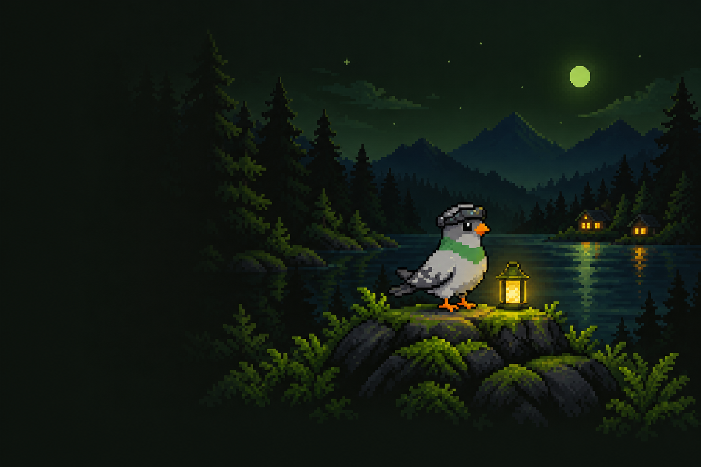

Your flock.
Your helpful pigeon.
Meet Crumbs. Questions, movie nights, and finding the right perch—he’s your bird.

Tiny wings. A lot to talk about.
Open the full Crumbs chat ↗What can I help with?
A small question has landed?
Ask me a question, tell me what you’re in the mood to watch, or get a little wing assistance around the Coop.
About your conversation
Messages use Matt’s AI connection to generate replies, and Crumbs may keep conversation history on the server. This page clears when you reload or choose “New chat”. Movie requests are reviewed and confirmed in Requests; a chat reply does not send one.
Let’s sort movie night.
Find a movie or TV show, choose the right one, then confirm your request.
Which perch do you need?
Try “photos”, “movies”, “books”, or the name of an app.
No perch by that name. Try another word, or ask Crumbs in the chat.
A little wing assistance.
Simple answers to the usual “where do I…?” questions.
Where do I watch movies and shows?
Open Watch for the family’s movie and TV library. On a TV or phone, the server address is https://watch.fatpigeon.ca.
How do I request something?
Choose Movies & TV above, search for a title, and review it in Requests. Pick seasons for a TV show, then confirm. Your account decides whether it needs approval.
Need help signing in or getting access?
Your Flock has account settings and password recovery. Ask Matt if you need an account or access to another app.
Open Your Flock ↗Something else on your bird brain?
Tell Crumbs which app you’re using, what you expected, and what happened instead.